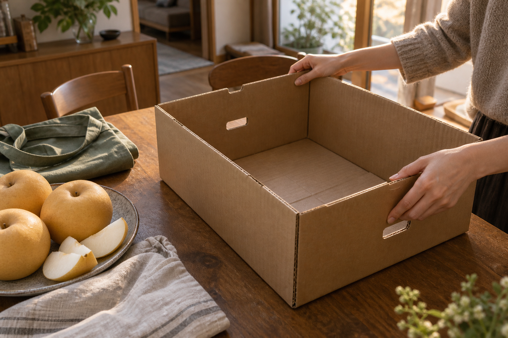

ESG / REPORT ·
과일 상자를 접기 전에,
다음 쓰임을 묻습니다
배를 꺼낸 뒤 식탁에 남은 빈 상자. 무작정 쌓아 두기보다 언제 어디에 다시 쓸지 떠올려 봅니다.

배를 하나씩 꺼내 놓고 나니 식탁 위에 상자만 남습니다. 손잡이도 멀쩡하고 바닥도 반듯합니다. 접으려고 모서리에 손을 댔다가 잠깐 멈춥니다. 주말에 부모님 댁에 가져갈 물건을 여기에 담으면 어떨까. 빈 상자를 보는 일이 다음 약속을 떠올리는 일이 됩니다.
과일을 살 때는 안에 든 것부터 봅니다. 집에 도착해 과일을 꺼내고 나서야 포장의 크기와 부피가 눈에 들어옵니다. 상자 하나는 별것 아닌 듯해도 좁은 부엌 한쪽을 금세 차지합니다. 잘 만들어져서 버리기 아깝고, 남겨 두자니 어디에 둘지 마땅하지 않습니다.
“언젠가” 대신 다음 주말을 떠올리면
다시 쓰겠다는 마음만으로 상자를 모으면 어느새 상자를 위한 자리가 필요해집니다. 그래서 하나를 남기기 전에 구체적인 용도를 붙여 봅니다. 주말에 가져갈 그릇을 담을 상자, 책 몇 권을 옮길 상자. 쓸 날과 담을 물건이 떠오르면 어디에 둘지도 정하기가 쉽습니다.
다음 장보기에 가져갈 생각이라면 가게에 먼저 물어볼 수도 있습니다. “제가 가진 상자에 담아 주실 수 있나요?” 가게마다 계산대의 넓이도, 과일을 담는 방식도 다를 테니까요. 가져온 상자를 어디에 놓으면 되는지 짧게 이야기를 나누는 것까지가 다시 쓰는 준비입니다.
이 상자를 또 쓸까. 그렇다면 언제, 무엇을 담을까.
빈 상자가 집 안의 짐이 되지 않도록
남겨 둘 때는 안쪽과 바닥부터 살펴봅니다. 깨끗하고 마른 상태인지, 들었을 때 바닥이 벌어지지 않는지 확인합니다. 다시 쓰기 어려운 상태라면 아깝다는 마음만으로 보관할 필요는 없겠습니다. 오늘 남겨 둔 상자에도 역할이 끝나는 때가 있을 것입니다.
가게에서도 포장을 건네기 전에 손님의 이동을 물을 수 있겠습니다. 차에 실을 것인지, 걸어서 들고 갈 것인지. 이미 가져온 장바구니가 있는지. 과일이 다치지 않고 도착할 방법을 함께 정하다 보면 포장도 그날의 장보기에 맞출 수 있습니다.
상자를 한 번 더 썼다고 환경에 얼마나 도움이 됐는지 이 장면만으로 계산할 수는 없습니다. 다만 물건을 받은 뒤 곧바로 버리거나 무작정 쌓아 두기 전에, 내 생활 안에서 맡길 일을 찾아보는 시간은 가질 수 있습니다.
식탁 위 배를 접시로 옮기고, 빈 상자는 주말에 가져갈 물건 옆에 둡니다. 가져갈 것이 없는 다음 상자는 남겨 두지 않을 수도 있습니다. 오늘은 이 상자에 할 일이 생겼습니다. 그 정도의 구체적인 약속에서 다시 쓰기가 시작됩니다.
KFA Editorial · 일상에서 떠올릴 수 있는 장면을 구성한 생활 에세이입니다.